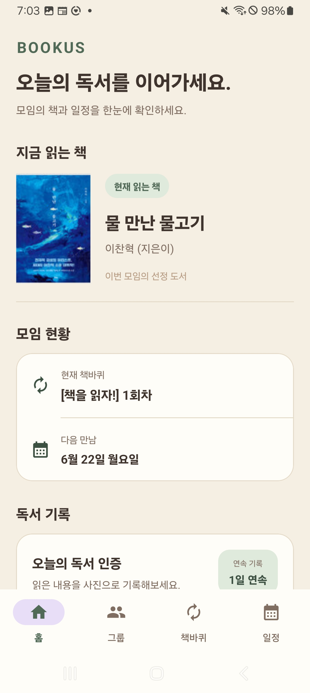
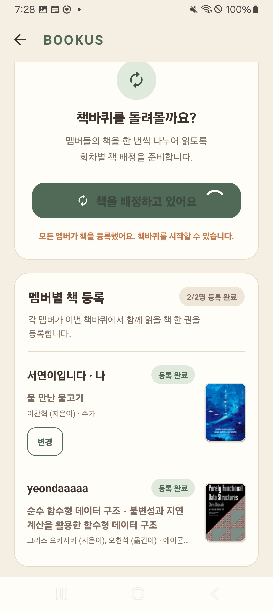
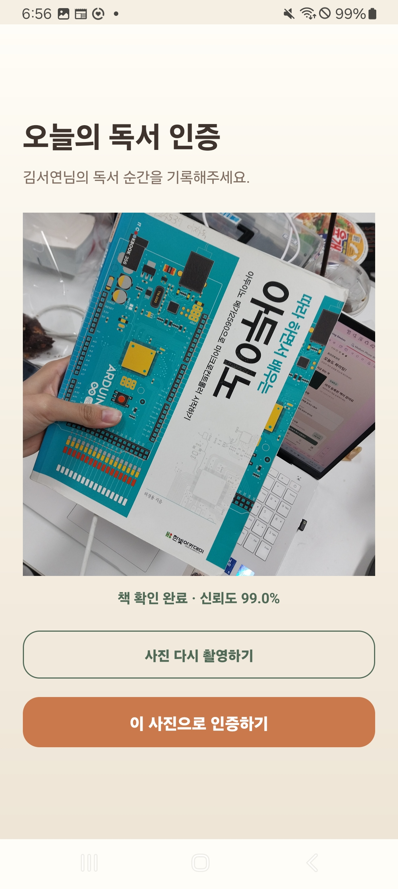
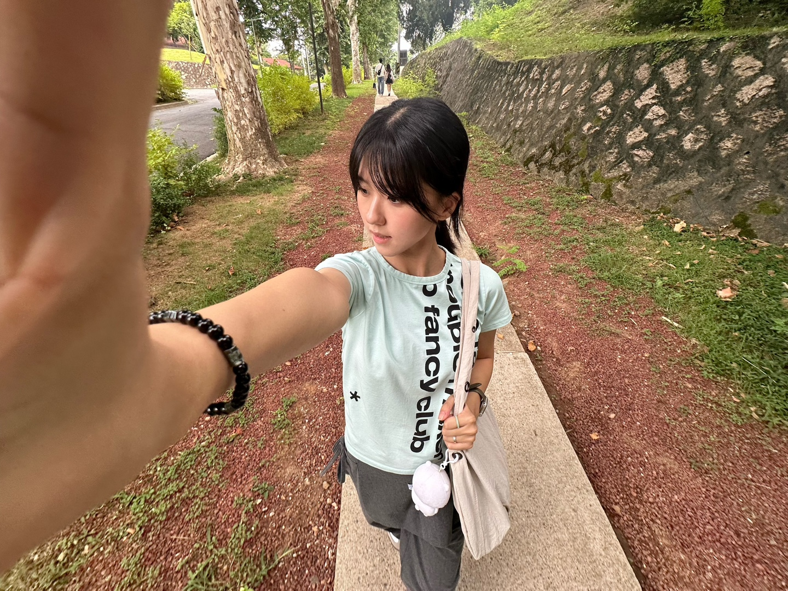
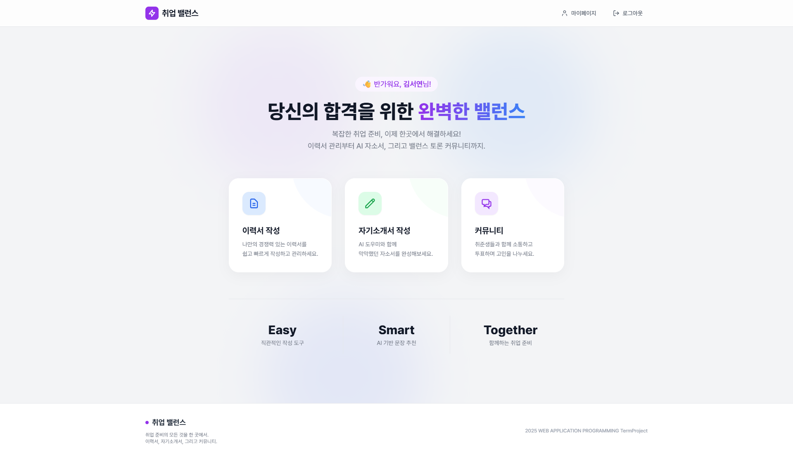
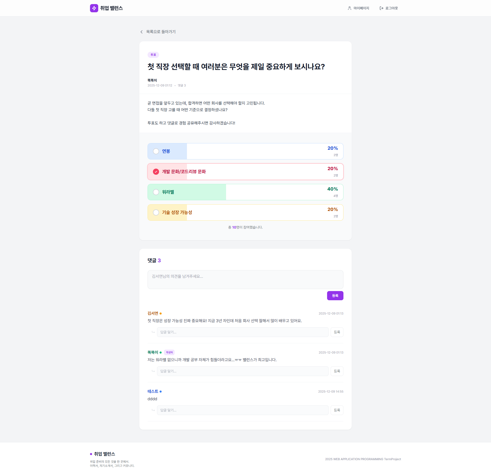
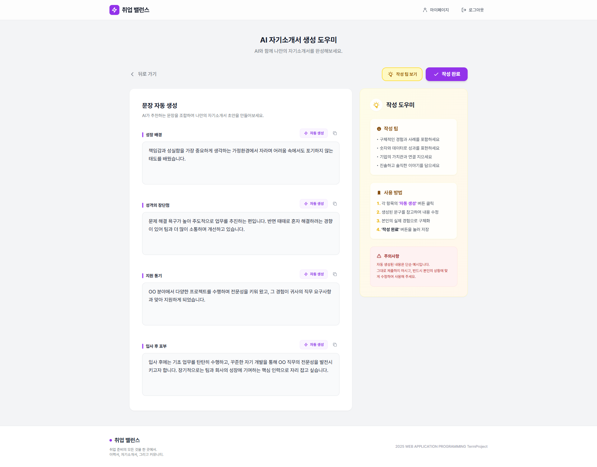
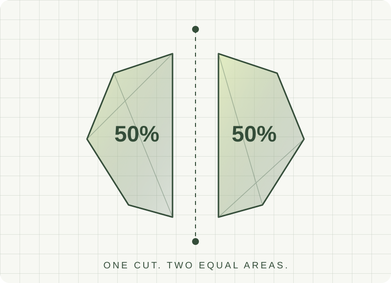

CS STUDENT
김서연 · syeoniism
부산대학교에서 컴퓨터공학을 공부하는 김서연입니다. 웹·앱과 게임 개발에 관심이 있습니다.
코드와 화면 사이,
사람이 느끼는 순간을 만듭니다.

Highlights
문제를 발견하고 기능과 화면, 사용자 경험을 함께 설계한 대표 프로젝트를 소개합니다.






취업 준비 홈이력서 작성, 자기소개서 작성, 커뮤니티 기능을 한곳에서 시작할 수 있도록 구성한 메인 화면입니다.
커뮤니티 · 밸런스 투표직접 아이디어를 내고 구현한 핵심 기능입니다. 투표 후 댓글을 작성하고, 선택한 항목의 색으로 서로 다른 의견을 빠르게 구분할 수 있습니다.
AI 자기소개서 작성항목별 추천 문장을 활용해 자기소개서 초안을 작성하고, 작성 팁을 함께 확인할 수 있도록 구성했습니다.
GEOMETRY, MADE PLAYABLE
